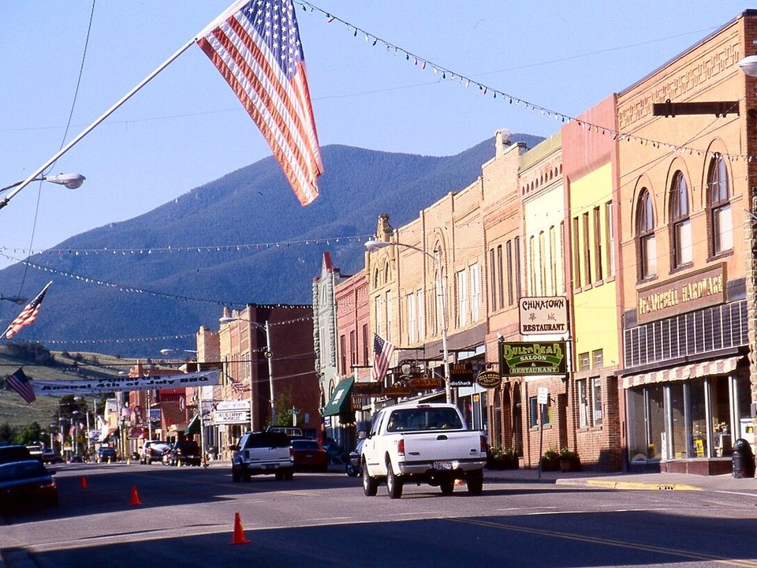

Downtown · Historic hotel
The Pollard Hotel
An 1893 hotel on Broadway.
Official details for The Pollard HotelThe gateway to America’s most beautiful drive.
Red Lodge is a former coal-mining town of brick storefronts at the foot of the Beartooth Mountains, and it’s the start of the Beartooth Highway, which climbs to nearly 11,000 feet on its way to Yellowstone. Land at Red Lodge Airport above town, stay at the 1893 Pollard Hotel, drive the Beartooth in summer, drink at Red Lodge Ales, visit the rescued animals at the Yellowstone Wildlife Sanctuary, and ski Red Lodge Mountain in winter.

Time illustration: direct distance at 150 KTAS plus 15 minutes for departure and arrival, matching the discovery page. Use ForeFlight for your actual flight plan.
KRED, Red Lodge Airport, is a non-towered airport at 5,762 feet with a 4,000-foot runway, a few minutes from downtown.
Red Lodge Airport, Red Lodge, MT
A short runway at high elevation with mountains nearby; compute performance carefully. Noise abatement: for Runway 16 arrivals, fly downwind over the bluff east of downtown and use a high-angle final when practical. 100LL only. Billings (KBIL), an hour away, has long runways and full services. No live fuel price is shown.
Mountain flying: high density altitude on summer afternoons, strong winds and turbulence over the ridges, afternoon thunderstorms in summer, and winter snow and icing. About 1550 nm from Myrtle Beach: two long days each way with several fuel stops. Plan a week, or overnight on the way out and back.
Rates and availability need travel dates.
An 1893 hotel on Broadway.
Official details for The Pollard HotelA creekside resort south of town.
Official details for Rock Creek ResortRooms and cabins on the road to the Beartooth Highway.
Official details for Beartooth Hideaway Inn & CabinsA classic motel a short walk from downtown.
Official details for The Yodeler MotelLodging in Red Lodge.
Visit Red Lodge for More places to stayPrices and availability for your dates, through our partner Stay22. This is an affiliate link: we may earn a commission at no cost to you. The picks above are never paid.
Reserve weekend dinners.
Montana steaks downtown.
Official details for Carbon County SteakhouseMexican food, pizza and margaritas on Broadway.
Official details for Bogart’sLocal beer and food.
Official details for Red Lodge AlesRestaurants in Red Lodge.
Visit Red Lodge for More restaurantsThe Beartooth Highway is usually open late May to mid-October.
This prototype links to the local visitor site. It does not yet match events to your travel dates.
The high road to Yellowstone.
Visit Red Lodge for Beartooth Highway openA long-running rodeo.
Visit Red Lodge for Home of Champions RodeoRed Lodge Mountain.
Red Lodge Mountain for Ski seasonCheck the local calendar when choosing a weekend, and confirm dates and tickets with the organizer.
A sample Red Lodge weekend. This is a two-day flight each way; plan a week. No bookings or availability confirmed.
Land at KRED mid-morning.
Lunch in town.
A short walk, then back to the airport.
Land at KRED, subject to weather, density altitude and your actual flight plan.
Walk Broadway.
Dinner at the Pollard.
Drive the Beartooth Highway.
Lunch at the top, then back.
Red Lodge Ales.
The Wildlife Sanctuary.
Compute takeoff performance and allow time at the FBO.
Mountain winds build by afternoon; leave early.
The main sight.
Explore.
Dinner in town.
These details make the difference between an appealing list and a usable getaway.
Lodging and a car.
About 1,550 nm from Myrtle Beach: two long days each way.
4,000 feet at 5,762 feet; use KBIL if needed.
June to September.
Picks and links reviewed by WingAway Weekends. Hours, prices, menus and availability change often, so confirm directly with each place before booking. Spotted something out of date, or have a favorite we missed? Email us at hello@wingawayweekends.com.
WingAway Weekends helps you discover the destination. Use ForeFlight and current official aviation information for route, performance, weather, NOTAMs and preflight decisions. Flight planning and PIC responsibility stay with the pilot.